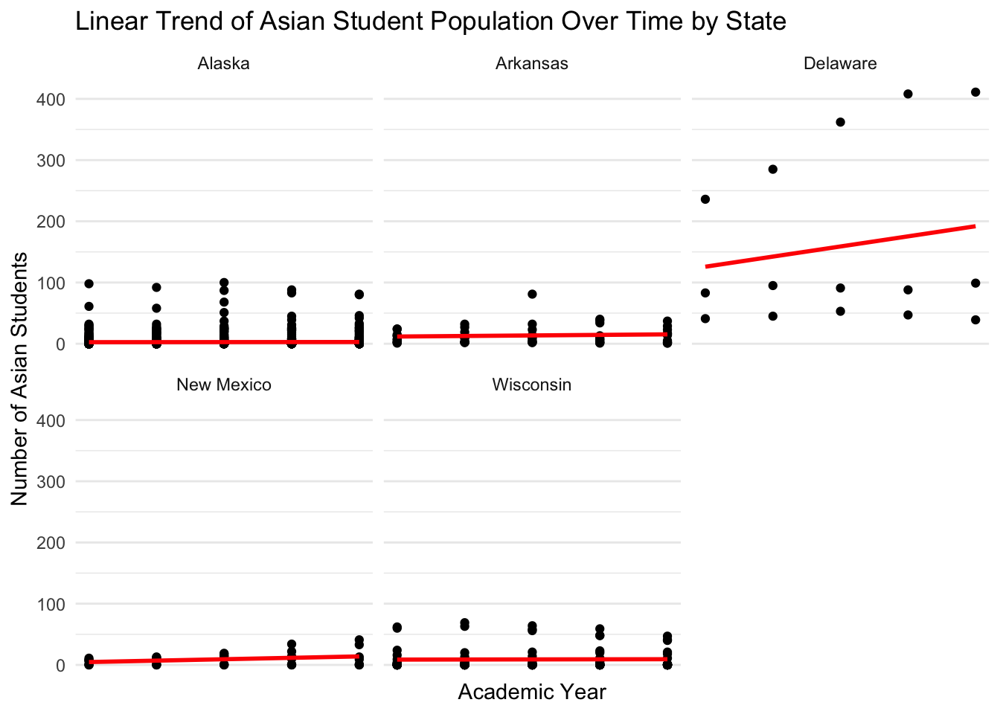

── Conflicts ────────────────────────────────────────── tidyverse_conflicts() ──
✖ dplyr::filter() masks stats::filter()
✖ dplyr::lag() masks stats::lag()
ℹ Use the conflicted package (<http://conflicted.r-lib.org/>) to force all conflicts to become errors
From the plot above, we see the overall percentage change in enrollment of students from years 2018 to 2022, faceted by state. This provides an overall picture to compare enrollment growth rate over the years for different states. For instance, we see states like New Mexico with the highest growth rate of 14.99%, compared to New York and Virginia that had growth rates of -0.1% and -0.35% respectively. This gives an opportunity to further investigate why some states have extremely high or low enrollment growth rates, and if this reflects growth rates of certain demographics as well.
In the plot below, we have considered 5 states with the largest absolute growth rates in enrollment from 2018 to 2022.
model_data <- our_data_clean |>mutate(`Grades 1-8 Students [Public School] 2022-23`=as.numeric(`Grades 1-8 Students [Public School] 2022-23`), `Grades 9-12 Students [Public School] 2022-23`=as.numeric(`Grades 9-12 Students [Public School] 2022-23`), `Asian or Asian/Pacific Islander Students [Public School] 2022-23`=as.numeric(`Asian or Asian/Pacific Islander Students [Public School] 2022-23`),`Asian or Asian/Pacific Islander Students [Public School] 2021-22`=as.numeric(`Asian or Asian/Pacific Islander Students [Public School] 2021-22`),`Asian or Asian/Pacific Islander Students [Public School] 2020-21`=as.numeric(`Asian or Asian/Pacific Islander Students [Public School] 2020-21`),`Asian or Asian/Pacific Islander Students [Public School] 2019-20`=as.numeric(`Asian or Asian/Pacific Islander Students [Public School] 2019-20`),`Asian or Asian/Pacific Islander Students [Public School] 2018-19`=as.numeric(`Asian or Asian/Pacific Islander Students [Public School] 2018-19`) ) |>select(`School Name`, `State Name [Public School] Latest available year`,`Asian or Asian/Pacific Islander Students [Public School] 2022-23`,`Asian or Asian/Pacific Islander Students [Public School] 2021-22`,`Asian or Asian/Pacific Islander Students [Public School] 2020-21`,`Asian or Asian/Pacific Islander Students [Public School] 2019-20`,`Asian or Asian/Pacific Islander Students [Public School] 2018-19` ) |>filter(`State Name [Public School] Latest available year`%in%c("Alaska", "Arkansas", "Delaware", "New Mexico", "Wisconsin"))# Modify the data processing to clean the year column properlymodel_data_long <- model_data |>pivot_longer(cols =starts_with("Asian or Asian/Pacific Islander Students"),names_to ="Academic Year",values_to ="Asian Students",names_prefix ="Asian or Asian/Pacific Islander Students [Public School] " ) |>mutate(`Academic Year`=as.numeric(gsub("[^0-9]", "", `Academic Year`)) # Remove non-numeric characters safely )# Check for any NAs in the `Academic Year` column and remove them if necessarymodel_data_long <- model_data_long |>filter(!is.na(`Academic Year`))# Plot the dataggplot(model_data_long, aes(x =`Academic Year`, y =`Asian Students`)) +geom_point() +geom_smooth(method ="lm", se =FALSE, color ="red") +facet_wrap(~`State Name [Public School] Latest available year`) +labs(title ="Linear Trend of Asian Student Population Over Time by State",x ="Academic Year",y ="Number of Asian Students" ) +scale_x_continuous(breaks =c(2018, 2019, 2020, 2021, 2022), # Specify the years you want to showlabels =c("2018", "2019", "2020", "2021", "2022") # Custom labels (optional) ) +theme_minimal()
`geom_smooth()` using formula = 'y ~ x'

To build statistical models, we chose a Linear model to examine any overall linear trends in the enrollment of Asian students, in the top 5 states that demonstrated the highest percentage change in enrollment. From the plots, faceted by state, we observe that states like Delaware demonstrated the highest growth rate of Asian students. Whereas, states like New Mexico and Wisconsin showed almost no change.
We plan to investigate why some states (like New Mexico that displayed a high growth rate in enrollment) does not reflect a high growth rate for demographics like Asian students, and whether we find a similar trend with other demographics.
Expanding the Dataset
As we look to expand our dataset, we plan to include additional categorical variables that could enhance our analysis. For example, by segmenting (or “faceting”) the data by public schools, we could incorporate the number of government-funded programs—such as free or reduced lunch and language support for non-native English speakers. Using linear modeling, we could then explore whether the number of students in these programs tends to increase in schools within districts with larger minority populations. Additionally, if we are able to acquire more data for private schools, we could compare program participation rates between public and private schools.
Alternatively, by faceting the data by state, we could examine dropout rates broken down by race/ethnicity, gender, and grade level. This would allow us to model dropout trends over time, analyzing whether dropout rates change as students advance through their education. We could also investigate dropout patterns in economically disadvantaged districts and those with higher proportions of minority students, using logistic modeling to better understand these relationships.
Another variable to consider is the number of diploma recipients, categorized by gender and race/ethnicity. Similar to our analysis of dropout rates, we could use this data to model and predict graduation levels across different types of districts, such as those with high minority populations or lower economic resources.